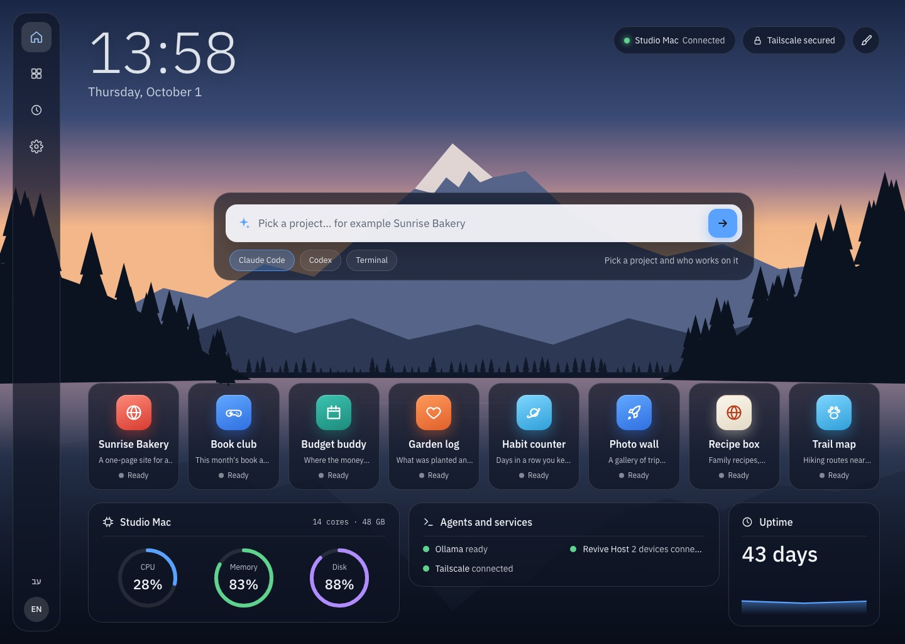
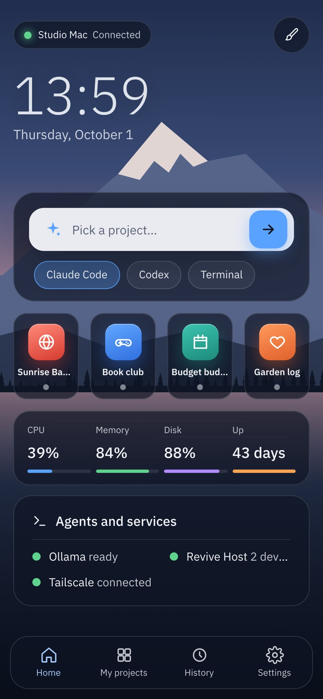
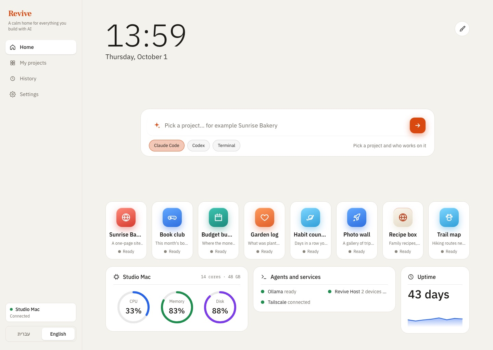
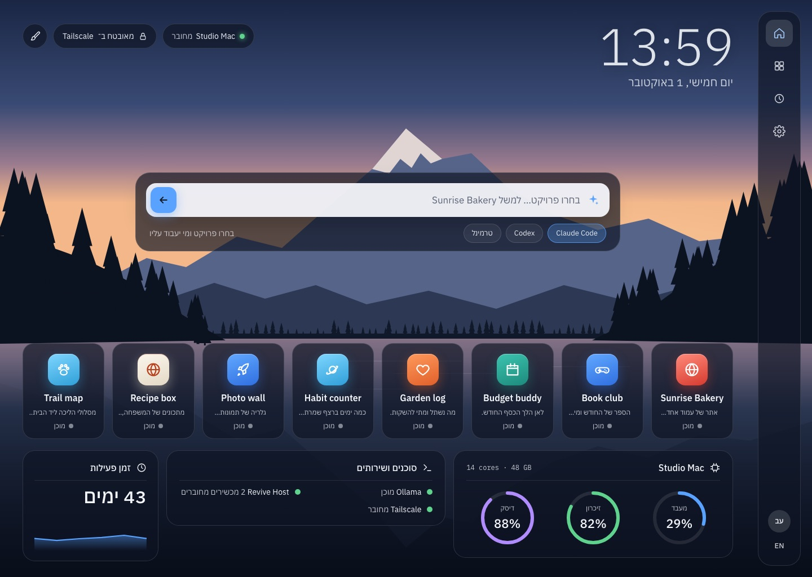
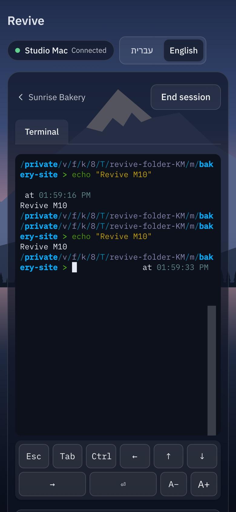
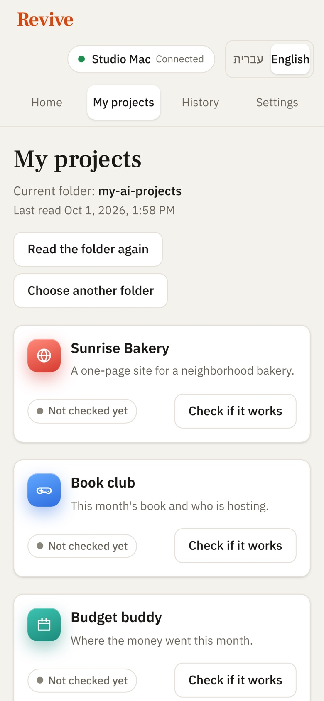

Choose the folder you build in
The one where Claude Code, Codex, Lovable or Bolt exports end up. Revive only reads it.
Revive finds every project in your folder, tells you in plain words what each one is, and runs it with one click. No code to read, nothing to configure.


Most people who build with AI end up with a folder full of half-remembered projects. Revive turns that folder into a calm, clear list.
The one where Claude Code, Codex, Lovable or Bolt exports end up. Revive only reads it.
On your Mac, in seconds: what each project is made of, how it starts, which port it opens and which keys it needs. No AI involved, no cost.
151 projects in 6 secondsOne plain sentence per project, in English and Hebrew, from a short summary. Only new or changed projects are sent next time.
about 2¢ a projectRevive installs what's missing, starts the project and shows it live inside the app. If something's wrong, it tells you why in one sentence.
Saved versions of your folder, with plain titles. An agent broke something? Go back, for one project or all of them, and undo that too.
Open Claude Code, Codex or a terminal in any project. Close Revive and they keep running; come back and pick up exactly where they were.
Share your Mac with your own devices over Tailscale. Pair a phone with a six-digit code and run, check and type into agents from anywhere.
A Home with a live sky that follows sunrise and sunset, your projects as tiles, your computer's health, and screensavers that wake when an agent needs you.
Your files stay on your Mac. Revive never opens your secret files and never changes your projects when it reads them.
Home: your projects with live status, a command bar that opens any project with an agent, and your Mac's health.
Frosted glass over a living landscape, or a warm, quiet page. Every screen works right to left and left to right, and each device keeps its own look.




Projects, versions and settings live on your Mac. There's no Revive account and no Revive server.
Reading a folder never changes a file. Claude gets a short summary, never your files, and has no tools.
.env files, keys and certificates are never opened. Only the names of the keys a project needs are shown.
Every go-back saves first and moves new files aside instead of deleting them.
Early access: this build isn't notarized by Apple yet, so the first time macOS will say it can't check it. Open System Settings → Privacy & Security, scroll down and click Open Anyway next to Revive. You only do this once. (Or in Terminal: xattr -dr com.apple.quarantine /Applications/Revive.app)
Yes, during early access. Reading a folder uses your own Claude account: about two cents per new or changed project, and nothing for projects that haven't changed.
Reading never changes a file; Revive only writes its own notes in a hidden .revive folder. When you start a project it may install its dependencies, and going back to a saved version always saves first so you can undo.
No. Revive is made for people who build with AI and don't read code. Everything is in plain words, and the technical details stay folded away until you want them.
macOS 11 or later on Apple silicon or Intel. To read folders, Claude Code signed in to your account. Revive brings everything else it needs, including tmux for sessions that keep running.
Yes. Revive never downloads files that are only in iCloud; it reads what's on your Mac and tells you how many files it skipped.
For now, download the newest version from this page; it replaces the old one and keeps your settings. Automatic background updates turn on with the first notarized build.
Not yet. Revive is Mac only for now; you can use it from any phone or computer's browser by pairing it with your Mac.